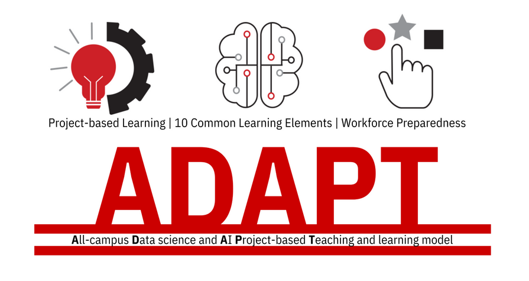

<div style="
  height: 100vh;
  display: flex;
  flex-direction: column;
  justify-content: center;
  align-items: center;
  text-align: center;
  padding: 2em;
  box-sizing: border-box;
">
  
  <h1>A Project-based Approach to Introductory R and Python for Data Science</h1>
  <h3>David J. Stokes | Mahmoud Harding</h3>
</div>

<hr style="margin-top: 2em;">

<script>
  // Optional: Scroll past cover page automatically
  window.onload = () => {
    if (window.location.hash === '') {
      document.querySelector('hr').scrollIntoView({ behavior: 'smooth' });
    }
  };
</script>
